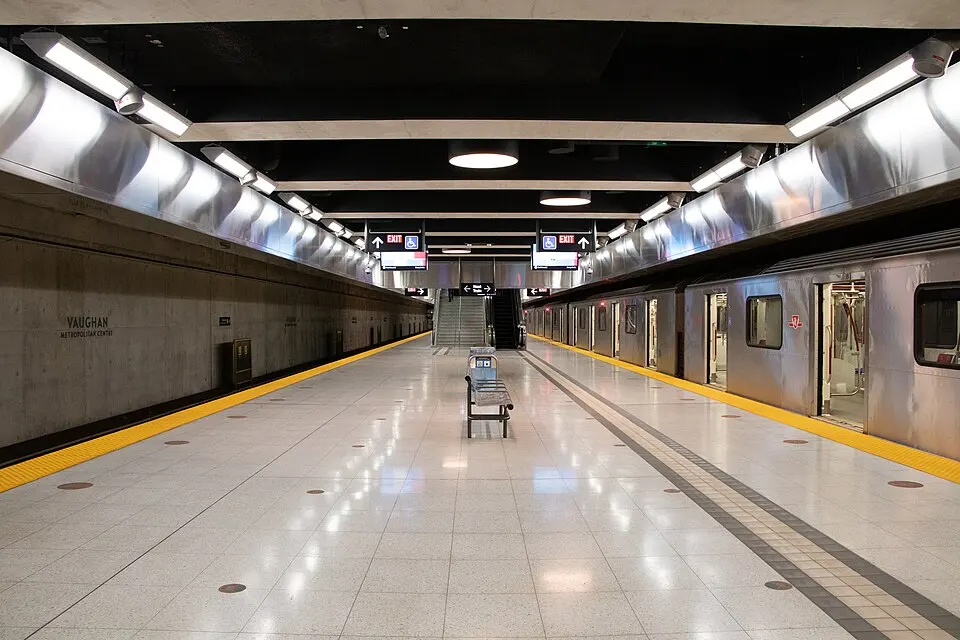

Signal
SignalStation atlas / Vaughan Metropolitan Centre
Station history
Vaughan Metropolitan Centre


Station history
Crews completed track installation for the extension. The province marked the milestone at its future northern terminus.
Revenue trains reached Highway 7 at Millway Avenue, giving Vaughan’s planned downtown a subway terminus and a link to the Viva bus rapidway.
SmartVMC Bus Terminal opened. An enclosed walkway linked York Region buses to the subway concourse and the Highway 7 rapidway.